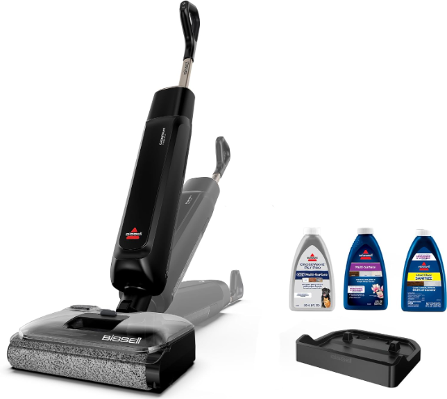

BISSELL CrossWave Reach Plus 4506F Product Review
A new CrossWave finally tackles the damp-roller problem with a hot-air dock—but $330 is enough money to ask whether the convenience is proven yet.
CONFIDENCE
QuietTrends may earn a commission when you purchase through links on this site. This helps support our research at no additional cost to you.
Executive Summary
Consider the BISSELL CrossWave Reach Plus 4506F if your home is mostly sealed hard flooring and you want one cordless machine to vacuum and mop while reducing the unpleasant cleanup that follows. Skip it if you mainly clean carpet, dislike proprietary cleaning formulas, or want months of independent reliability evidence before spending $329.99.
The hot-air dock is the real upgrade. A wet-dry vacuum that cleans beautifully but leaves a damp, smelly roller is not actually low-maintenance.
BISSELL launched the Reach Plus in the U.S. on September 8, 2026. The manufacturer says its 180-degree lay-flat body reaches up to five times farther beneath low furniture than a comparison machine, ZeroGap technology cleans along walls and baseboards, and the dock both self-cleans and hot-air dries the brush roll. Those are manufacturer claims, not QuietTrends hands-on findings. Early independent coverage is still mostly launch reporting rather than mature comparative testing.
BEST FOR
The ideal buyer has a mostly hard-floor home, frequent crumbs, paw prints or kitchen spills, and wants the daily floor routine to feel more like running one appliance than vacuuming and mopping separately.
- Pet households with sealed hard floors.
- Kitchens and open-plan living spaces that collect both debris and wet messes.
- Homes with low sofas or beds where a conventional upright head cannot reach.
- Buyers who specifically hate washing and air-drying a dirty roller after every clean.
Skip If
The Reach Plus is still a wet-floor-care appliance with tanks, solution, a roller and a dock. Automation reduces the chore; it does not eliminate ownership friction.
- Your home is primarily carpet or area rugs.
- You want steam rather than conventional wet cleaning.
- You need a long record of battery, dock and replacement-part reliability.
- The $50 premium over the standard Reach does not feel worthwhile for hot-air brush drying.
Price Reality Check
BISSELL launched the CrossWave Reach Plus at $329.99, while the standard CrossWave Reach launched at $279.99. That puts a very clear $50 price on the Plus model's most important distinction: the hot-air self-drying dock.
At this price, the question is not whether it can mop. It is whether the dock makes you more willing to use and maintain it several times a week.
For a busy hard-floor household, $50 can be reasonable if drying the roller reduces odor, mildew anxiety and the temptation to postpone cleanup. If you already rinse and dry a wet-dry vacuum carefully after every use, the standard Reach may be the more rational purchase. Buyers considering a much more expensive steam-capable machine should also read our Dreame Aero Ultra Steam review before deciding how much floor-care complexity they actually need.
Product Deep Dive
Lay-Flat Reach and ZeroGap Edge Cleaning
BISSELL's biggest physical redesign is the ability to lay the machine flat to 180 degrees. The company says this lets the Reach Plus clean up to five times farther under low-profile furniture, while ZeroGap is intended to pull debris and wash closer to walls and baseboards.
Buyer translation: these features matter because under-sofa dust and the dirty strip beside a baseboard are exactly where combo floor cleaners often make you reach for a second tool.
- The lay-flat body should reduce furniture moving in bedrooms and living rooms.
- Edge cleaning can reduce the need for a follow-up pass with a handheld vacuum or cloth.
- The value depends on head height, furniture clearance and how well suction and water pickup behave while fully reclined.
Buyer takeaway: the geometry is promising; independent tests still need to show whether pickup stays strong in the positions that make the design interesting.
The Hot-Air Dock Is More Important Than It Sounds
Wet-dry vacuums have an awkward ownership truth: the machine that saves time on the floor can give some of it back when you empty dirty water, rinse parts and deal with a damp roller. BISSELL's dock runs a self-cleaning cycle and then uses hot air to dry the brush roll.
- Drying may reduce the stale-roller smell that develops when damp fibers sit between uses.
- A dock-based routine makes it easier to finish the job consistently rather than leaving a wet roller in the machine.
- It does not remove the need to empty the dirty-water tank or periodically inspect hair, residue and channels.
Buyer takeaway: if the drying system proves durable, this is the feature most likely to improve everyday ownership rather than just the spec sheet.
Cleaning Claims Need Context
BISSELL says the Reach Plus removes up to twice as much dirt and debris as a Bona spray mop and, with the company's Hard Floor Sanitize Formula, can eliminate 99.9% of specified bacteria. It also says targeted pressure helps floors dry in half the time versus CrossWave OmniForce.
Those comparisons are useful for understanding BISSELL's positioning, but they are controlled manufacturer claims with specific test conditions. They do not establish that the Reach Plus cleans twice as well as every competing wet-dry vacuum, nor that every floor will dry twice as fast.
Real-World Ownership Check
The Reach Plus looks intentionally simpler after the cleaning pass, but it is not maintenance-free. Wet food, pet hair, dirty water and cleaning solution still travel through the machine.
- Setup: charge the cordless unit, fill the clean-water tank with an approved floor solution, and confirm that your flooring is suitable for wet cleaning.
- Maintenance: empty dirty water promptly, let the dock complete its self-cleaning and drying cycle, and periodically inspect the roller, filter and channels rather than assuming the dock handles everything.
- Fit: reserve permanent floor space and an outlet for the dock; check clearance under the furniture you actually care about.
- Deal breaker: if the battery, dock heater or proprietary consumables become troublesome, a convenience-first machine can quickly feel more complicated than a vacuum plus mop.
What I Would Compare Next
The smartest comparison is not simply “which wet-dry vacuum has the most features?” It is “which maintenance routine will I still tolerate six months from now?”
- BISSELL CrossWave Reach: same new Reach family without the hot-air drying dock and $50 cheaper at launch. Compare this first.
- Tineco FLOOR ONE line: compare maneuverability, edge pickup, self-cleaning behavior, consumable cost and the maturity of owner feedback.
- Dreame Aero Ultra Steam: compare if you are tempted by steam, hot-water washing and a more ambitious all-in-one floor-care system rather than a simpler CrossWave workflow.
Buyer Signal Analysis
The Reach Plus deserves attention because it arrived in the U.S. on September 8 and immediately appeared in NBC Selected's September new-product coverage with an Amazon purchase link. BISSELL is also using the tenth anniversary of CrossWave to position it as the next step in an established product family rather than an experimental new category. The search landscape has not caught up: exact-model queries are still dominated by BISSELL launch material, retailer/listing pages and international launch coverage instead of several established U.S. review publishers.
Assimilated Signal Sources
- Manufacturer: supports the September 8 launch, $329.99 MSRP, 180-degree lay-flat design, ZeroGap edge cleaning, self-cleaning hot-air dock and controlled cleaning/sanitizing claims.
- Professional coverage: NBC Selected highlighted the Reach Plus among notable September 2026 launches and linked the exact U.S. Amazon listing, but broad hands-on comparative testing remains thin.
- Amazon listing: confirms the U.S. product as BISSELL CrossWave Reach Plus Wet Dry Vacuum and Mop model 4506F, ASIN B0GSWSYTVH.
- Owner feedback: the exact model is too new for a mature long-term pattern around battery aging, dock durability, roller odor or parts availability.
- Search chatter: comparison intent is likely to center on Reach versus Reach Plus, Tineco alternatives, and whether hot-air drying is worth paying extra for.
Unanswered Buyer Questions
- Is the BISSELL CrossWave Reach Plus 4506F worth the extra $50 over the standard CrossWave Reach?
- Does the hot-air dock actually prevent brush-roll odor after months of frequent use?
- How does CrossWave Reach Plus compare with Tineco FLOOR ONE models on edge pickup and maintenance?
- Does suction and water pickup remain effective when the Reach Plus is fully laid flat under furniture?
- How long will the battery and dock heater hold up in a household that cleans several times per week?
QuietTrends read: BISSELL has targeted two real annoyances—under-furniture reach and damp-roller cleanup—rather than merely adding app features. That makes the Reach Plus more interesting than a routine model refresh, but its $329.99 price is easiest to justify for frequent hard-floor cleaners who will actually benefit from the dock.
COMPARE FIRST
BISSELL CrossWave Reach Plus 4506F
A thoughtfully updated wet-dry floor cleaner with a genuinely useful maintenance idea, but one that is still too new for QuietTrends to treat long-term battery, dock and roller performance as settled.
Final Buyer Guidance: Buy if you clean sealed hard floors frequently, value lay-flat reach, and know a hot-air drying dock will make you more consistent about maintenance. Compare the $279.99 standard Reach first; if you want steam or a more ambitious flagship system, compare the Dreame Aero Ultra Steam.
CHECK CURRENT PRICE ON AMAZON →